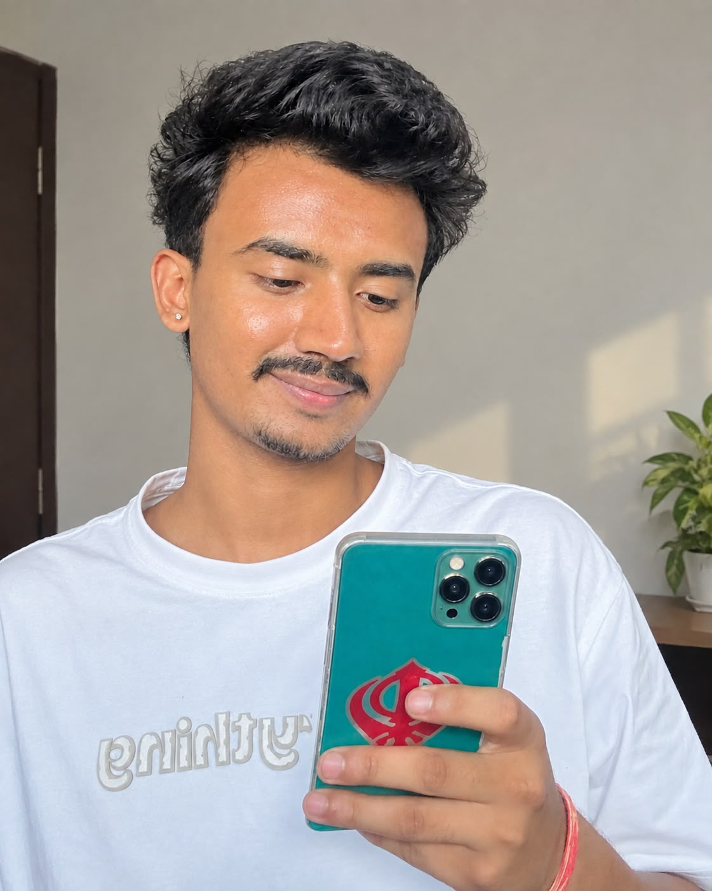

Bipin Paija
Team Leader & Testing Lead
Leadership, planning, architecture, testing, quality assurance and client communication.
View full portfolio →Each team member has an individual professional portfolio covering About, Experience, Education and Skills, with their project role shown as practical experience.
Leadership, planning, architecture, testing, quality assurance and client communication.
View full portfolio →
Requirements, documentation, use cases, testing evidence and project coordination.
View full portfolio →
UI/UX design, wireframes, prototyping, responsive design and interactive experience design.
View full portfolio →
Frontend, backend, databases, JavaScript, interactive development and application integration.
View full portfolio →Tech-Yeti combines leadership, documentation, design and software development to deliver professional digital solutions for prospective clients.